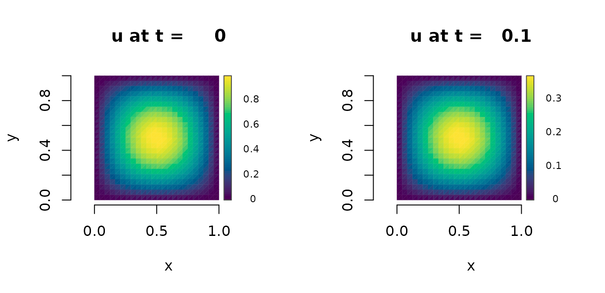
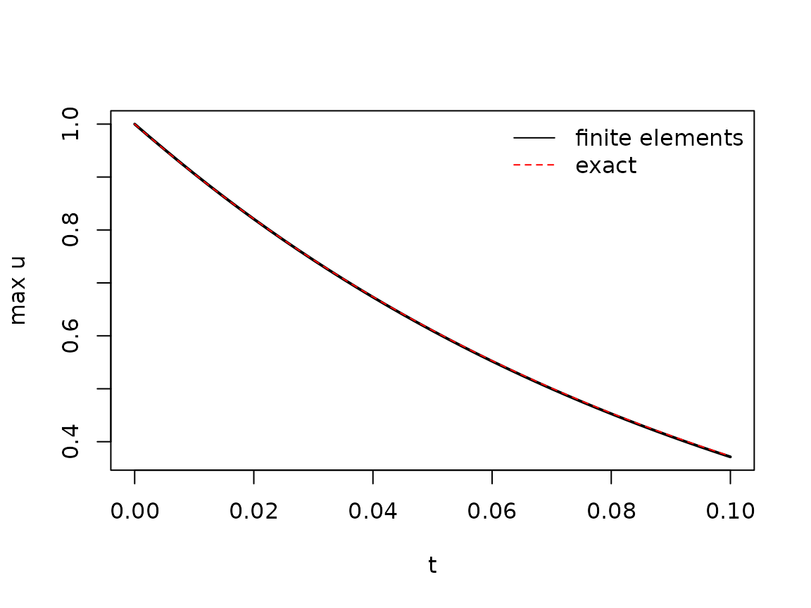
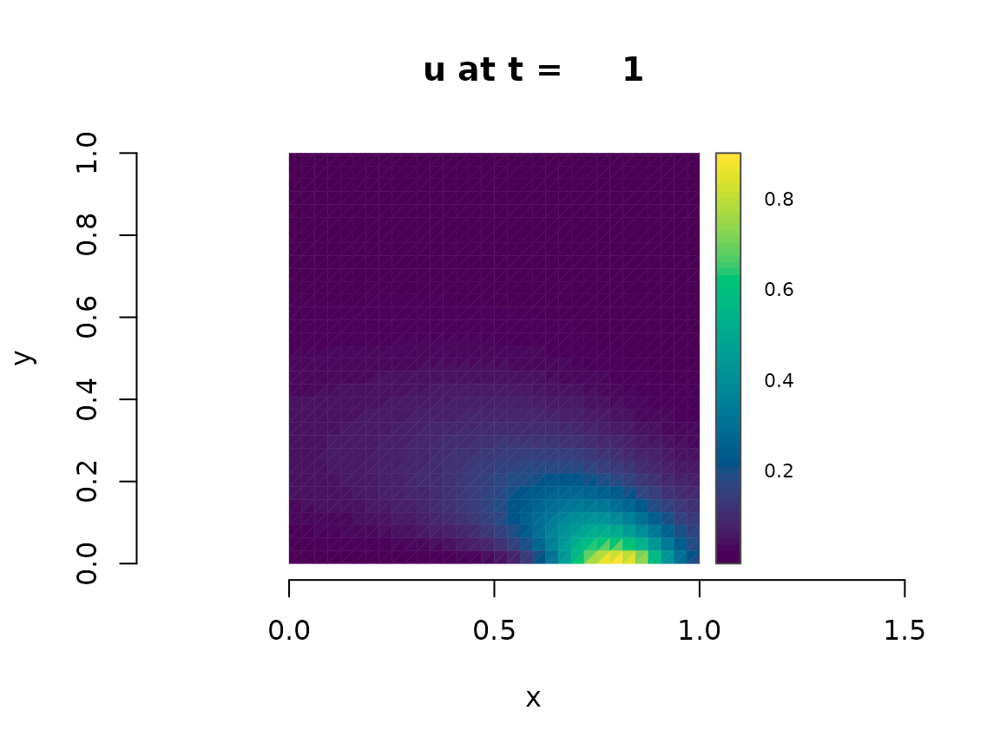

Semidiscretization
For
\partial_t u - \nabla\cdot(\kappa\nabla u) = f(x, t), \qquad u(\cdot, 0) = u_0,
the finite-element method in space gives the system of ordinary differential equations
M \frac{d\mathbf U}{dt} + K\mathbf U = \mathbf F(t),
with mass matrix M_{ij} = \int\phi_j\phi_i and stiffness matrix K. Both are assembled once.
Time stepping
The theta method with step \Delta t reads
(M + \theta\Delta t K)\mathbf U^{n+1} = (M - (1 - \theta)\Delta t K)\mathbf U^n + \Delta t\left(\theta \mathbf F^{n+1} + (1 - \theta)\mathbf F^n\right).
- \theta = 1, backward Euler: first order, L-stable, damps all modes.
- \theta = 1/2, Crank-Nicolson: second order, A-stable but only weakly damping; very rough initial data can produce slowly decaying oscillations.
The matrix M + \theta\Delta t K is factored once (Cholesky) and reused at every step. Dirichlet data g(x, t) are imposed at each new time level.
Decay of a Fourier mode
With u_0 = \sin(\pi x)\sin(\pi y), zero boundary values and no source, the exact solution is e^{-2\pi^2\kappa t}u_0.
kappa <- 0.5
u0 <- function(x, y) sin(pi * x) * sin(pi * y)
prob <- heat_problem(pde_mesh_rectangle(nx = 24), diffusivity = kappa, initial = u0,
bcs = dirichlet_bc(0), time = c(0, 0.1))
sol <- solve_pde(prob, dt = 0.0025)
sol
#> <pde_transient> P1, 625 dofs, 40 steps of crank-nicolson (dt = 0.0025)
#> stored times: 41 in [ 0, 0.1]
summary(sol)
#> Time-dependent finite-element solution
#> method: crank-nicolson dt: 0.0025 steps: 40
#> degrees of freedom: 625 ( 529 free)
#> linear solver: cholesky max relative residual: 8.27e-16
#> integral of the solution, first and last stored time: 0.4041 to 0.1501
#> assembly 0.023 s, time stepping 0.032 s
exact_end <- function(x, y) exp(-2 * pi^2 * kappa * 0.1) * u0(x, y)
errornorm(solution_at(sol, 0.1), exact_end, "L2")
#> [1] 0.001295828
#> attr(,"norm")
#> [1] "L2"
#> attr(,"gradient")
#> [1] "exact"
par(op)The solution amplitude follows the exact decay:
peak <- apply(sol$values, 2, max)
plot(sol$times, peak, type = "l", xlab = "t", ylab = "max u", lwd = 2)
curve(exp(-2 * pi^2 * kappa * x), add = TRUE, lty = 2, col = "red")
legend("topright", c("finite elements", "exact"), lty = 1:2, col = c("black", "red"), bty = "n")
Temporal convergence in isolation
To measure the time error alone, use a solution that the spatial
discretization represents exactly: u =
e^{-t}(x + 2y) is linear in space, so the semidiscrete solution
is exact and any remaining error comes from time stepping.
Crank-Nicolson takes two backward Euler steps first
(startup = 2, Rannacher startup) to damp oscillations from
rough initial data; a fixed number of such steps keeps second order, and
their effect shows only on the coarsest steps.
ex <- function(x, y, t) exp(-t) * (x + 2 * y)
p <- heat_problem(pde_mesh_rectangle(nx = 4), source = function(x, y, t) -exp(-t) * (x + 2 * y),
initial = function(x, y) x + 2 * y, bcs = dirichlet_bc(ex), time = c(0, 1))
dts <- c(0.05, 0.025, 0.0125, 0.00625)
err <- sapply(c("backward-euler", "crank-nicolson"), function(m) sapply(dts, function(dt) {
s <- solve_pde(p, dt = dt, method = m, output_times = 1)
max(abs(s$values[, 1] - ex(s$space$dof_coords[, 1], s$space$dof_coords[, 2], 1)))
}))
data.frame(dt = dts, err, rate_BE = c(NA, diff(log(err[, 1])) / diff(log(dts))),
rate_CN = c(NA, diff(log(err[, 2])) / diff(log(dts))))
#> dt backward.euler crank.nicolson rate_BE rate_CN
#> 1 0.05000 0.0010367972 8.362892e-06 NA NA
#> 2 0.02500 0.0005137428 2.121328e-06 1.013015 1.979034
#> 3 0.01250 0.0002557196 5.303578e-07 1.006483 1.999930
#> 4 0.00625 0.0001275734 1.325911e-07 1.003236 1.999982Higher-order and adaptive time stepping
Two more schemes are available. method = "bdf2" is the
two-step backward differentiation formula: second order, L-stable and as
cheap as backward Euler (one solve per step with a fixed matrix, the
first step taken by backward Euler). method = "sdirk2" is
the two-stage, L-stable singly diagonally implicit Runge-Kutta method of
Alexander with \gamma = 1 - 1/\sqrt 2;
both stages share one matrix.
err2 <- sapply(c("bdf2", "sdirk2"), function(m) sapply(dts, function(dt) {
s <- solve_pde(p, dt = dt, method = m, output_times = 1)
max(abs(s$values[, 1] - ex(s$space$dof_coords[, 1], s$space$dof_coords[, 2], 1)))
}))
data.frame(dt = dts, err2, rate_BDF2 = c(NA, diff(log(err2[, 1])) / diff(log(dts))),
rate_SDIRK2 = c(NA, diff(log(err2[, 2])) / diff(log(dts))))
#> dt bdf2 sdirk2 rate_BDF2 rate_SDIRK2
#> 1 0.05000 3.524540e-05 7.900893e-05 NA NA
#> 2 0.02500 8.646756e-06 2.191811e-05 2.027204 1.849892
#> 3 0.01250 2.141466e-06 5.849209e-06 2.013560 1.905810
#> 4 0.00625 5.328595e-07 1.518309e-06 2.006771 1.945776With adaptive = TRUE, SDIRK2 controls the step size. The
stage values give an embedded first-order solution, and the difference,
measured in the mass norm relative to the solution, is the local error
estimate. Steps are accepted when the estimate is below tol
and the next step size follows the usual controller with a safety
factor. dt is then the initial step.
s <- solve_pde(p, dt = 0.1, method = "sdirk2", adaptive = TRUE, tol = 1e-5, output_times = 1)
d <- s$diagnostics
c(steps = d$steps, rejected = d$rejected_steps, factorizations = d$factorizations,
error = max(abs(s$values[, 1] - ex(s$space$dof_coords[, 1], s$space$dof_coords[, 2], 1))))
#> steps rejected factorizations error
#> 1.80000e+02 2.00000e+00 5.00000e+00 1.54724e-06Adaptive stepping keeps the step size while the controller asks for less than a 25 percent change, so the stage matrix is refactorized only a few times, as the diagnostics report. Coefficients that depend on time are not supported by the multistage methods.
Time-dependent sources and boundary data
Sources and boundary values can depend on time. Here a hot spot moves along the bottom boundary while the top is kept cold:
hot <- function(x, y, t) exp(-50 * (x - 0.2 - 0.6 * t)^2)
p <- heat_problem(pde_mesh_rectangle(nx = 32), diffusivity = 0.05, initial = 0,
bcs = list(dirichlet_bc(hot, "bottom"), dirichlet_bc(0, "top")), time = c(0, 1))
s <- solve_pde(p, dt = 0.025, output_times = c(0.25, 0.5, 1))
plot(s, time = 1)
Conservation and stability
With zero-flux boundaries and no source, the total heat \int u\,dx = \mathbf 1^\top M \mathbf U is conserved exactly by both schemes, because \mathbf 1^\top K = 0:
p <- heat_problem(pde_mesh_rectangle(nx = 16), initial = function(x, y) exp(-30 * ((x - 0.3)^2 + y^2)),
time = c(0, 0.5))
s <- solve_pde(p, dt = 0.05, method = "backward-euler")
w <- assemble_vector(s$space, 1)
range(colSums(w * s$values))
#> [1] 0.05179147 0.05179147General parabolic problems
parabolic_problem() adds advection and reaction, \partial_t u - \nabla\cdot(k\nabla u) + b\cdot\nabla
u + cu = f, with optional SUPG stabilization (consistent: the
time derivative is included in the stabilized residual). See the
advection-diffusion article. Second-order equations in time (waves and
elastodynamics) have their own article.